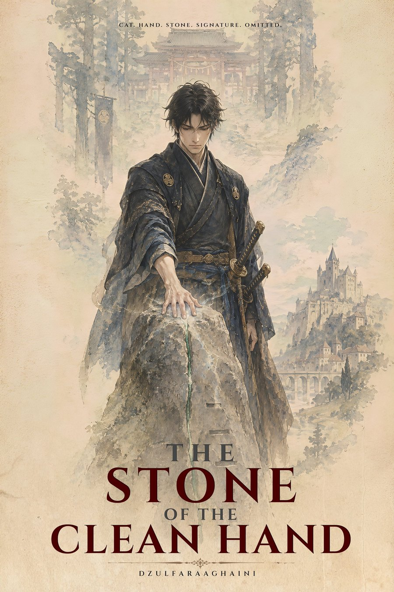

The Threefold Crown
Definition
An old pagan faith built around three supreme gods who may, or may not, be one god wearing three faces — a contradiction its own believers call the Threefold Mystery and have never been in any hurry to resolve. Auron the Father governs heaven, law, kingship, judgment, and oaths; Elara the Mother governs earth, birth, fertility, harvest, and hearth; Solan the Son governs the sun, fire, youth, passion, and sacrifice. A believer may favor one god over the other two without ever quite denying that all three are, somehow, the same throne. The formula recited at its temples leaves the contradiction standing on purpose: Father above. Mother beneath. Son beside us. Three crowns. One Heaven.
Ritual-heavy and elaborately hierarchical, with wine treated as sacred and pork freely eaten, the Threefold Crown holds that its own throne is the one true one — a claim that makes its temple politics every bit as susceptible to ambition as any earthly court, and its priesthood just as capable of turning a private grief, or a private embezzlement, into doctrine.
Appears In
Vantashen's state religion in The Stolen Prince War, where Hierarch Doreth turns a private grief into a war he tells himself is a monument, and the guardian at Level 40 is known to delvers as the Trial of Solan. In The Iron Stiletto War, the Order of the Pale Cloth's High Cleric Ambrose declares a pair of shoes heretical on the Crown's own authority. In The Third Grain, a legal claim over a county mill is argued and won entirely inside the Crown's own law, under a courtroom ceiling painted with a judge who has spent thirty years complaining that Auron's three scales were never painted quite level. And in The Stone of the Clean Hand, a hearth-priest's honest report of a stranger's bow to Solan's Fire and refusal of the feast-pig reaches Hierarch Odilo at Castelmaur, who lays the temple's interdict on a whole lane until its idol is cast down.
Cases Where This Appears
 Case 0157The Stolen Prince WarAn indifferent floor, a dead prince, and a war built on the wrong reason.
Case 0157The Stolen Prince WarAn indifferent floor, a dead prince, and a war built on the wrong reason. Case 4417The Iron Stiletto WarA pair of chrome heels, and the war two crowns paid for them.
Case 4417The Iron Stiletto WarA pair of chrome heels, and the war two crowns paid for them. Case 2140The Third GrainGrain. Tolerance. Grace. Arithmetic. Bread.
Case 2140The Third GrainGrain. Tolerance. Grace. Arithmetic. Bread.
Case 2231The Stone of the Clean HandCat. Hand. Stone. Signature. Omitted.